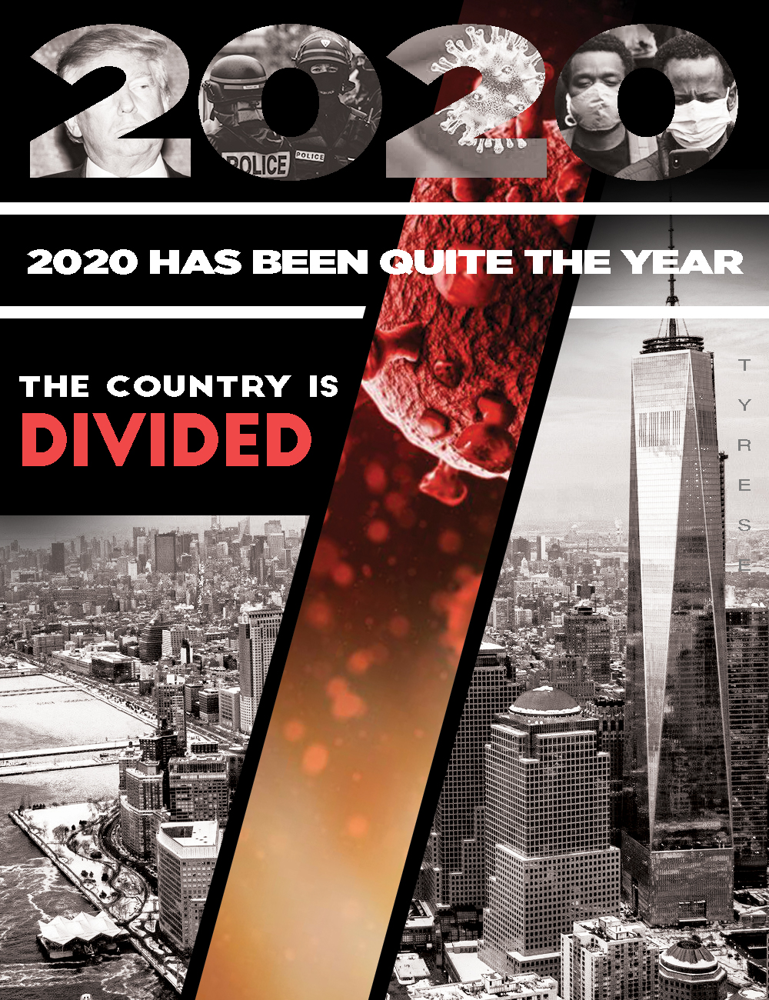

My story is about what the year 2020 itself, and how this year has been one the most dreaful years in a long time for many people considering all of the horrible events that have taken place this year. And i wanted to make a story that was basically a welcoming party to the new year 2021 one as it slowly approaches in the next few weeks, hoping that that year gives us a much better outcome than this year has gave us with things such as covid, police burtality, and Donald Trump.
Credits: @ev. "Lyon france police",Unsplash.com, May 5, 2019
Credits: Mark Peterson "trump" Reduxpicture.com
Credits: "New york" https://wallpaperaccess.com/new-york-city
Credits: "corona virus" https://www.webmd.com/lung/coronavirus